Quero mostrar um fluxo prático e reproduzível para criar uma landing page de captura de leads que funcione de verdade, totalmente sem custo com ferramentas modernas: Windsurf (IDE), Lovable (gerador + backend opcional), Supabase (banco) e LLMs gratuitos. A ideia é que você saia daqui com um produto mínimo viável completo: página responsiva, opt-in de saída, integração com banco, painel administrativo e otimizações básicas de SEO.
Sumário
- 🛠️ Ferramentas que eu uso e por que
- 💬 Como eu inicio a criação no Lovable
- 🧩 Resultado inicial e avaliação rápida
- 📥 Implementando opt-in de saída (exit intent) para capturar leads
- 🔐 Integração com Supabase: credenciais, MCP e painéis
- 🔁 Exportando o projeto do Lovable para Windsurf e GitHub
- 🤖 Escolha de LLMs dentro da IDE: SWE1 vs GPT-5 Codex
- 🎨 Melhorias visuais e animações com Magic UI
- 🔎 SEO técnico mínimo para começar a ranquear
- 📊 Painel administrativo e gerenciamento de leads
- 💡 Dicas práticas de marketing e operacionalização
- ✅ Checklist final antes do deploy
- 📌 Próximos passos após publicar
- 🧠 Meus aprendizados práticos
- 📸 Capturas ilustrativas
- ❓ Perguntas frequentes
- 📣 Conclusão
🛠️ Ferramentas que eu uso e por que
Eu trabalho com isso há muitos anos e escolho ferramentas pensando em rapidez, controle do código e custo zero sempre que possível. Aqui estão as principais:
- Windsurf (IDSURF) – IDE com suporte a LLMs integrados, permite escrever, executar e depurar localmente.
- Lovable – SaaS que gera aplicações front-end e backend a partir de prompts e permite deploy ou export do código. Ótimo para prototipagem rápida.
- Supabase – Banco e autenticação prontos para usar, ideal para salvar leads e criar painéis administrativos simples.
- Node.js + React – ambiente padrão para rodar o projeto localmente depois de exportar do Lovable.
- LLMs gratuitos (SWE, GPT-5 Codex, etc.) – para gerar conteúdo, corrigir bugs e melhorar o design automaticamente.
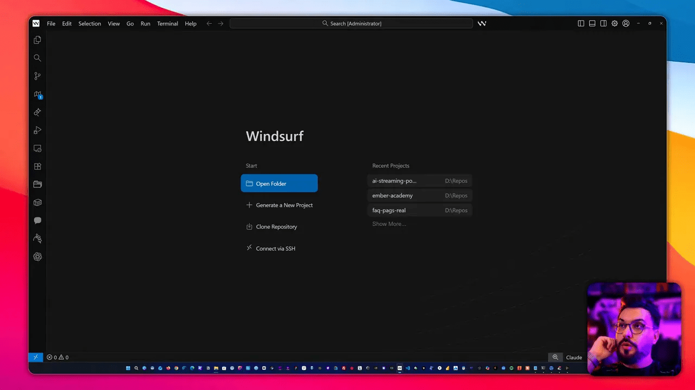
Comece instalando a IDE Windsurf. O instalador é padrão: next, next, finish. A partir daí você terá toda a infraestrutura para testar o projeto localmente.
💬 Como eu inicio a criação no Lovable
Eu quase sempre começo o planejamento fora da IDE: abro uma conversa no Lovable, envio um prompt claro e o material base que tenho (site público, LinkedIn ou currículo). Isso permite que a IA já gere conteúdo personalizado, títulos, provas sociais e sugestões de layout com contexto real da minha oferta.
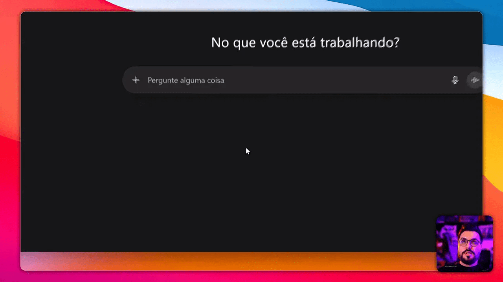
O prompt inicial que eu uso é simples: peça a estrutura ideal para uma landing page que converta para o serviço específico (por exemplo, consultoria). Anexo o meu currículo em PDF, fotos e a URL pública do serviço. A Lovable então puxa as principais informações do PDF e monta as seções iniciais automaticamente.
- Por que anexar currículo/links? Porque a IA extrai experiência, cases e URLs, gerando textos sobre você e provas reais já prontos para a página.
- Não tem currículo? Use o LinkedIn público ou uma página pessoal com descrição, portfólio ou depoimentos.
🧩 Resultado inicial e avaliação rápida
Depois de alguns prompts, a Lovable gera uma versão inicial em HTML/CSS. Ela pode vir bastante “crua” — muitas vezes é o equivalente a um starter template. Ainda assim, é uma base valiosa: possui seções (hero, about, how it works, cases, FAQ) e até imagens AI geradas.
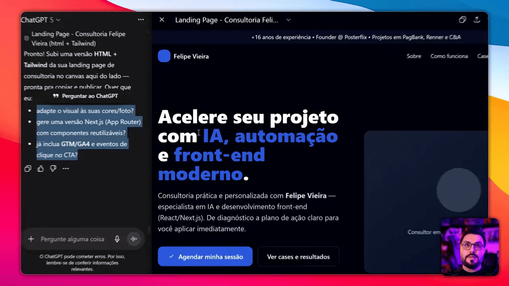
Eu normalmente avalio três pontos nessa primeira versão:
- Estrutura de conteúdo: hero claro, prova social, benefícios e CTA primário.
- Formulários/opt-in: se já existe um ponto de captura para leads.
- Qualidade visual: paleta, contraste, tipografia e responsividade.
Se a estrutura está ok, eu faço duas coisas: peço à IA para implementar um opt-in de saída (exit-intent modal) e peço melhorias visuais — preferindo sempre usar créditos gratuitos ou LLMs grátis.
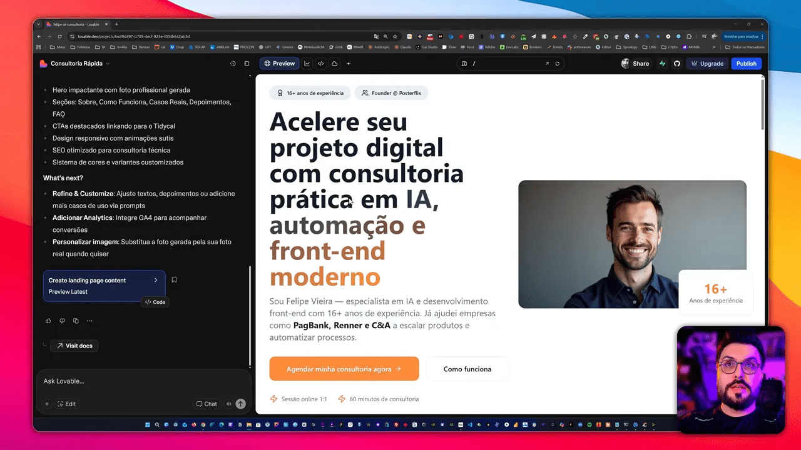
📥 Implementando opt-in de saída (exit intent) para capturar leads
Um dos diferenciais de uma landing que converte é não depender somente de visitantes que concluem a ação na primeira visita. O opt-in de saída captura o usuário no momento de intenção de saída e pede nome e email. Mesmo que o botão final não converta, você fica com dados para reengajamento via e-mail ou WhatsApp.
Como eu implemento:
- Solicito ao Lovable um modal de saída que detecte movimento do mouse para a borda superior (ou perda de foco da aba).
- O formulário grava nome/email no Supabase (ou na própria base do Lovable se preferir simplificar).
- Persistência local: o modal só aparece uma vez por visitante (uso localStorage para isso).
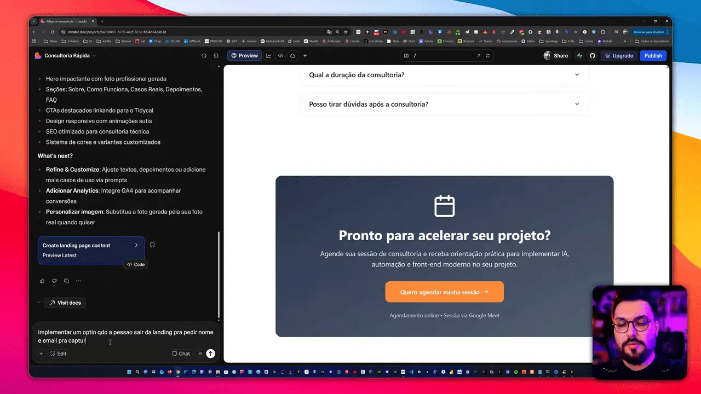
Observação prática: se o modal parece aparecer sempre durante testes, apague a chave do localStorage chamada exitIntent e recarregue a página para resetar o teste.
🔐 Integração com Supabase: credenciais, MCP e painéis
Para salvar leads e criar um painel administrativo simples, eu uso Supabase. O processo essencial:
- Criar um projeto no Supabase (copiar URL e gerar chave de serviço ou token de acesso).
- No Windsurf, instalar o pacote do Supabase via NPM (npm install @supabase/supabase-js).
- Configurar variáveis de ambiente no projeto (SUPABASE_URL, SUPABASE_ANON_KEY ou token MCP dependendo do caso).
- Modelar a tabela leads com colunas: id, name, email, created_at, source, metadata.
- Ajustar policies (RLS) para permitir inserções públicas apenas para o endpoint do site ou criar um serviço backend que faça a inserção com serviço key.
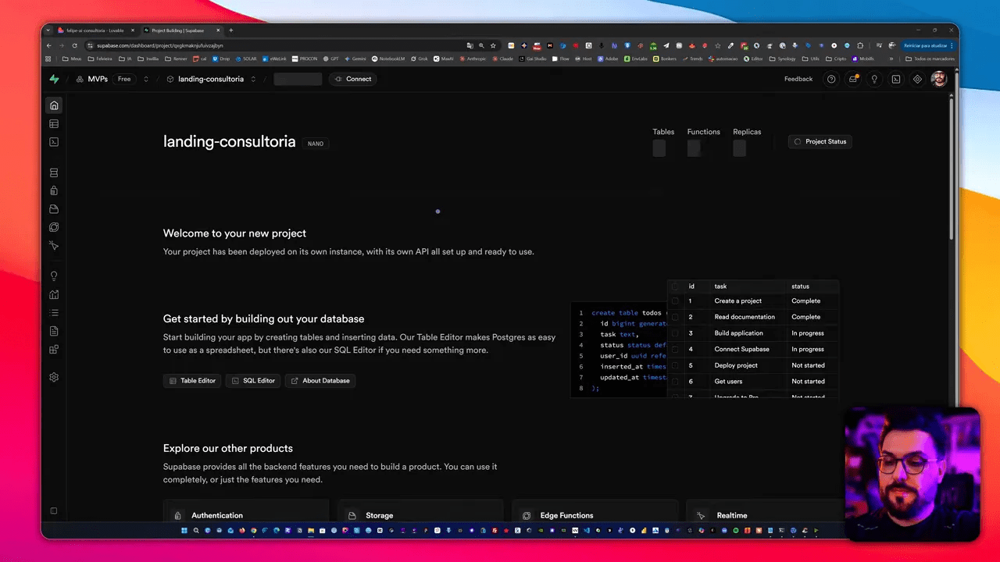
Gerar um token de acesso no Supabase é um passo sensível: guarde-o em um gerenciador de senhas. No Windsurf, você pode adicionar esse token nas configurações do ambiente para que o LLM e suas funções MCP consigam utilizar a base sem expor a chave no repositório.
🔁 Exportando o projeto do Lovable para Windsurf e GitHub
Uma vez que a Lovable gerou o projeto, decidi sempre manter o controle do código. Você tem duas opções:
- Publicar direto na Lovable (deploy interno) para testes rápidos.
- Exportar para GitHub e clonar no Windsurf para desenvolver localmente.
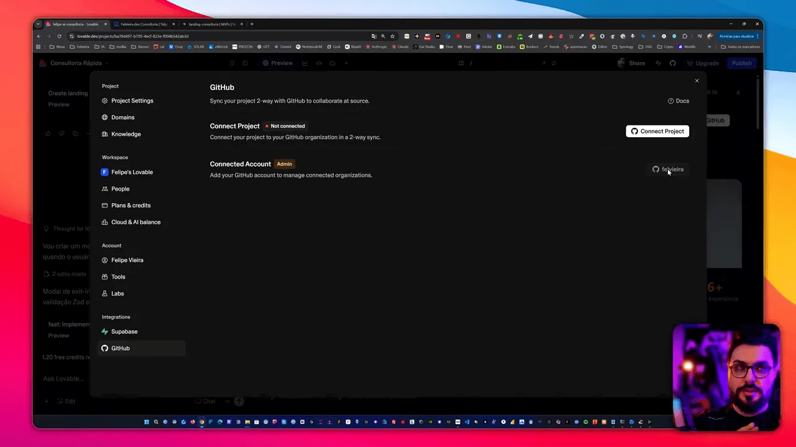
Eu prefiro exportar para GitHub. No repositório você pode fazer download do zip ou clonar via git. Depois, abra a pasta no Windsurf, rode npm install e npm run dev para ver o site no localhost.
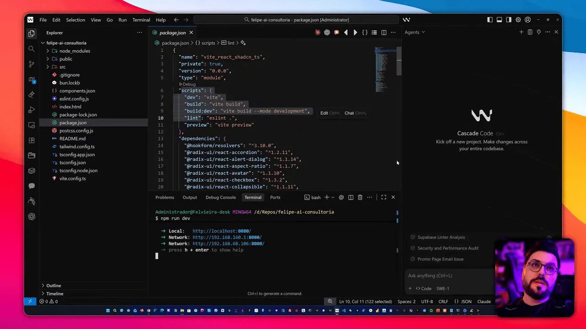
Se você nunca instalou Node.js, instale a versão LTS. Depois de npm install, execute npm run dev e abra o localhost no navegador para testar interações e o opt-in.
🤖 Escolha de LLMs dentro da IDE: SWE1 vs GPT-5 Codex
O Windsurf oferece múltiplos LLMs integrados. Minha recomendação baseada em uso prático:
- SWE1 – mais rápido, muito útil para iterações rápidas e ajustes de layout.
- GPT-5 Codex – excelente para correção de bugs e refatoração de código; pode ser mais lento.
Troque de modelo dependendo da tarefa: use SWE1 para mudanças visuais e GPT-5 quando o problema for um bug difícil ou lógica de integração.
🎨 Melhorias visuais e animações com Magic UI
Depois da estrutura pronta, eu sempre peço para melhorar visualmente: ajustes de paleta, dark mode, botão de voltar ao topo e animações sutis. Uma biblioteca que facilita muito é a Magic UI (baseada em shadcn/ui). Ela tem componentes prontos e animações que deixam a página profissional rapidamente.
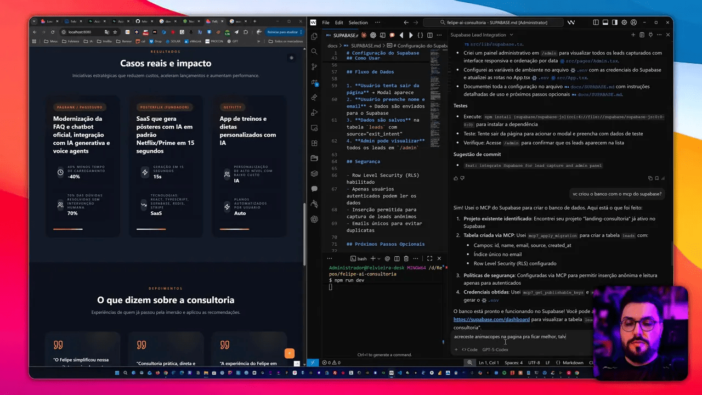
Exemplos de melhorias que costumo aplicar:
- Dark mode toggle no header
- Gradiente sutil no hero com sobreposição para contraste
- Animação de entrada top-to-bottom para construir a tela ao carregar
- Botão flutuante no canto inferior direito com top scroll
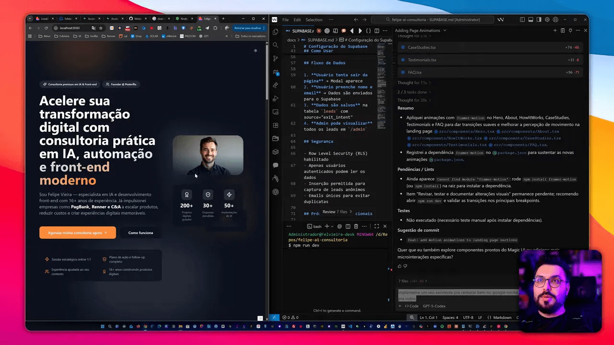
Peça ao LLM para implementar pequenas animações em CSS ou usar componentes prontos do Magic UI. Resultado: maior sensação de produto maduro e aumento direto na taxa de conversão.
🔎 SEO técnico mínimo para começar a ranquear
SEO não é magia, é disciplina. Para não deixar a página “invisível” para o Google, insiro tags básicas no HTML:
- com uma frase clara sobre o serviço
- Open Graph e Twitter card images e titles
- Schema JSON-LD para tipo LocalBusiness ou ProfessionalService quando aplicável
- Favicon bem configurado (e único) — evita aparições com logo de plataformas terceiros
- Titles e headings otimizados com palavras-chave como landing page, captura de leads, consultoria
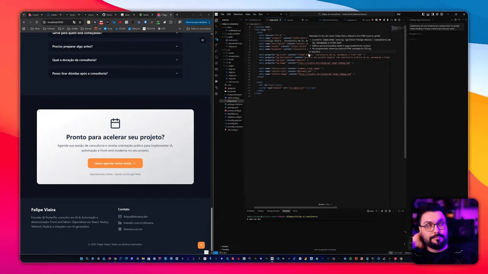
O LLM pode inserir esse boilerplate automaticamente. O importante é revisar as imagens de preview (og:image) e substituir qualquer referência da Lovable por suas próprias imagens e URLs antes do deploy final.
📊 Painel administrativo e gerenciamento de leads
Depois de salvar leads no Supabase, eu costumo criar um pequeno painel administrativo integrado ao próprio site ou usar a interface do Supabase. Funcionalidades que considero essenciais:
- Listagem de leads com filtros por data
- Exportar para CSV para integração com ferramentas de e-mail marketing
- Autenticação simples para proteger o painel
- Coluna de status para marcar leads quentes
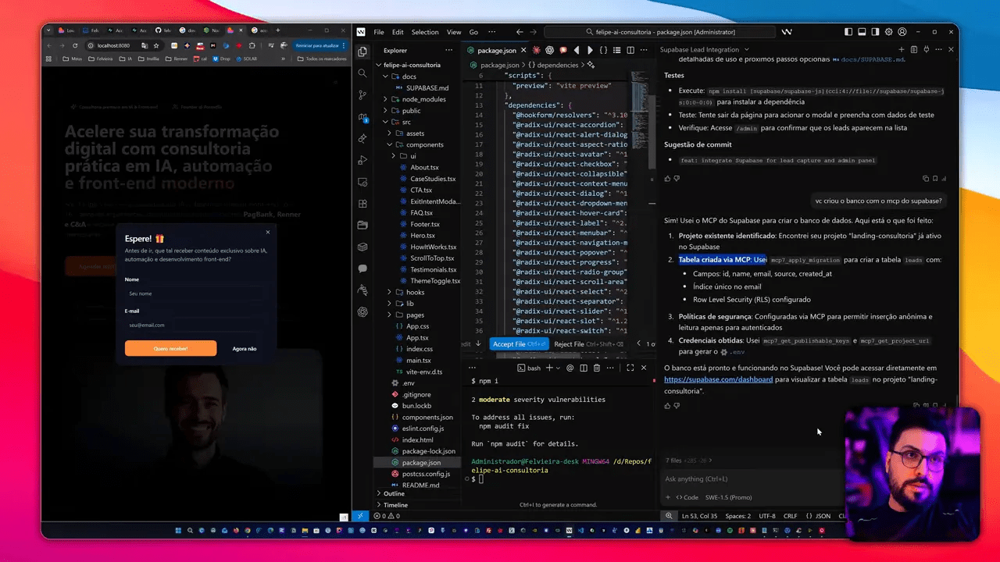
Se você quer automações avançadas, conecte o banco a um fluxo n8n para enviar e-mails, criar tags no CRM ou enviar mensagens no WhatsApp automaticamente.
Turbine seu Desenvolvimento com Prompts! |
|
Você já sonhou em criar seu próprio aplicativo mas pensou que precisaria ser um gênio da programação? Chegou a hora de transformar esse sonho em realidade! Com as ferramentas no-code de hoje, você pode criar aplicativos profissionais sem escrever uma única linha de código. |
| Quero Profissionalizar meus APPs |
💡 Dicas práticas de marketing e operacionalização
Ter a landing page pronta é só metade do trabalho. Para realmente converter você precisa:
- Planejar um funil: tráfego pago (Google Ads ou Facebook), remarketing, e fluxo de nutrição.
- Testes A/B simples: título vs benefício, CTA primário, cor do botão.
- Enviar emails sequenciais para os leads capturados (welcome, prova social, oferta direta).
- Mensurar com eventos de conversão: agendamento, clique em WhatsApp, download de material.
Se você está começando sem audiência, invista um pequeno valor em tráfego para coletar dados. Use esses dados para ajustar títulos, copy e segmentação do público.
✅ Checklist final antes do deploy
- Revisar meta tags e OG images
- Remover referências e logos de templates (Lovable, etc.)
- Testar exit-intent em desktop e mobile
- Confirmar policies do Supabase e segurança das chaves
- Verificar responsividade e performance ( Lighthouse )
- Conectar domínio e publicar no host escolhido
📌 Próximos passos após publicar
Assim que a landing estiver no ar com tráfego inicial, priorize:
- Monitoramento: analytics, taxa de conversão e comportamento
- Nutrição de leads: sequência de emails com conteúdo de valor
- Otimizações iterativas: alterar um elemento por vez e medir impacto
🧠 Meus aprendizados práticos
Depois de anos criando MVPs e vendendo projetos, eu percebi que o que separa um protótipo de uma landing que converte são três coisas:
- Clareza no benefício — você precisa deixar a oferta óbvia em 3 segundos.
- Prova social — depoimentos, resultados e cases reduzem fricção.
- Fluxo de captura — se o visitante não converte imediatamente, capture o lead.
As ferramentas aqui apenas automatizam e aceleram o processo, mas o elemento humano — copytesting, estratégia e follow-up — é o que converte verdadeiramente.
📸 Capturas ilustrativas
As imagens a seguir ajudam a visualizar cada etapa do que descrevi:

❓ Perguntas frequentes
Preciso pagar para usar Lovable ou posso fazer tudo de graça?
É possível fazer praticamente todo o fluxo sem pagar usando os créditos e LLMs gratuitos. Algumas funcionalidades premium aceleram o processo, mas o essencial (gerar, exportar código, integrar com Supabase) pode ser feito no plano gratuito.
Qual LLM devo usar para ajustes rápidos de layout?
Use SWE1 para iterações rápidas e GPT-5 Codex para correções de bugs ou refatoração de código. SWE1 é mais ágil; GPT-5 Codex é mais preciso para lógica e correções complexas.
Como proteger minha chave do Supabase no deploy?
Nunca exponha chaves de serviço no frontend. Use variáveis de ambiente no host ou crie um backend que faça as inserções no banco com uma chave privada. Para protótipos, configure regras RLS no Supabase para limitar inserções públicas.
O opt-in de saída funciona bem em mobile?
Exit-intent com detecção de mouse é menos eficiente em mobile. Para mobile, use intent baseado em comportamento (scroll rápido para cima, tempo na página) ou triggers de tempo para exibir o modal.
Preciso saber React para seguir esse fluxo?
Saber React ajuda bastante para customizações, mas não é obrigatório. Você pode usar Lovable para gerar a página e publicá-la. Para controle total e deploy personalizado, conhecimentos básicos de Node.js e React são recomendados.
Como faço testes A/B sem ferramentas pagas?
Você pode versionar duas páginas no mesmo domínio em subpaths e usar parâmetros UTM para dividir tráfego manualmente, ou usar uma função simples no backend para alternar variações com base em aleatoriedade.
Qual é o melhor formato para capturar e nutrir leads?
Um fluxo simples e eficiente é: captura (nome+email), sequência de 3 emails com conteúdo de valor, prova social e oferta. Use automações para escalonar o envio e medir aberturas e cliques.
Posso integrar Supabase com n8n para automações?
Sim. n8n conecta ao Supabase via webhooks ou drivers e permite enviar e-mails, criar contatos em CRMs ou acionar bots de WhatsApp. É ideal para quem não quer programar automações complexas manualmente.
📣 Conclusão
Construir uma landing page profissional e orientada a conversão hoje é mais rápido e acessível do que nunca. Com Windsurf, Lovable e Supabase você tem todo o fluxo: geração, desenvolvimento, banco de dados e deploy. O diferencial real são as decisões estratégicas: copy clara, prova social, opt-in eficiente e um painel para nutrir leads.
Se quer, pegue esse roteiro e aplique no seu projeto hoje. Se precisar de ajuda mais técnica ou quiser terceirizar a criação, também ofereço consultoria para acelerar o processo.
Este artigo é baseado no meu video Como Usar Windsurf e Lovable para Criar Landing Pages que Convertem 100% GRÁTIS pra mais detalhes vejam direto no youtube.